One system for every industrial journey.
A production-ready visual language, component contract, template library, and Sitecore implementation guide for the 12 PoC page types and 13 routes.
Reliable networks deserve a reliable interface.
The system turns Moxa’s engineering credibility into a clear decision path: discover, compare, validate, and act—without relearning the interface on every page.
Credible
Specifications, sources, and proof stay close to every decision.
Guided
Search, navigation, comparison, and AI reduce time to the right product.
Reusable
Templates are assembled from native components and shared tokens.
Operational
Figma names map directly to Sitecore renderings and page contracts.
Four synchronized layers.
Design tokens
Color, type, spacing, radius, sizing, elevation, motion.
- 105 physical variables
- 10 Starter-compatible collections
- Alias-ready naming
Components & templates
54 component contracts and 12 page templates.
- Responsive behavior
- State coverage
- Accessibility notes
Routes & Sitecore
13 PoC routes and 30 rendering mappings.
- Content model
- Rendering parameters
- Acceptance criteria
Green leads. Neutrals create trust. Accents communicate function.
#008787#006B70#082F49#40CBD0#F39A61#76B900#162F3A#637781#D7E3E4#F4F8F8#FFFFFFFunctionalMeaning remains stable across light, campaign, and inverse surfaces.
| Role | Light | Dark campaign | Inverse | Usage rule |
|---|---|---|---|---|
| Surface / Canvas | #FFFFFF | #004D55 | #082F49 | Page background only |
| Surface / Raised | #F4F8F8 | #006B70 | #153E54 | Cards and overlays |
| Text / Primary | #162F3A | #FFFFFF | #FFFFFF | WCAG AA required |
| Text / Secondary | #637781 | #C3E0E1 | #C3E0E1 | Supporting copy |
| Action / Primary | #008787 | #40CBD0 | #8FF4F0 | One dominant action per region |
| Focus | #40CBD0 | #8FF4F0 | #8FF4F0 | 3 px ring + 2 px offset |
| Success | #76B900 | #B9E26B | #B9E26B | Status only |
| Attention | #F39A61 | #FFC08F | #FFC08F | CTA or warning, not both |
One family. A precise hierarchy.
Type contract
| Family | Inter · Helvetica Neue fallback |
| Hero | 62–78 px · −4.5% tracking |
| Heading | 34–48 px · −3.5% tracking |
| Body | 16–18 px · 1.5–1.6 line height |
| Eyebrow | 12 px · 800 · uppercase · .20em |
| Technical data | Tabular numbers where supported |
Do not shrink headings to solve layout. Adjust the content width, component layout, or responsive breakpoint.
8-point rhythm, 12-column alignment.
Spacing scale
Default section spacing: 64–96 px desktop, 48–64 px compact. Cards use 24–32 px internal padding.
Page grid
Max content width: 1240 px. Desktop gutters: 32 px. Major modules share the same left and right alignment.
Industrial precision with restrained softness.
Corner radius
4 px controls · 12–16 px cards · pill only for filters and status.
Elevation
Depth communicates overlay or hierarchy—never decoration.
Motion
| Fast | 120 ms |
| Standard | 200 ms |
| Emphasis | 320 ms |
| Easing | cubic-bezier(.2,.8,.2,1) |
Accordion, mega menu, counter, and AI panel motion must support reduced motion.
Show systems in context. Keep products legible.
ProductClean technical view
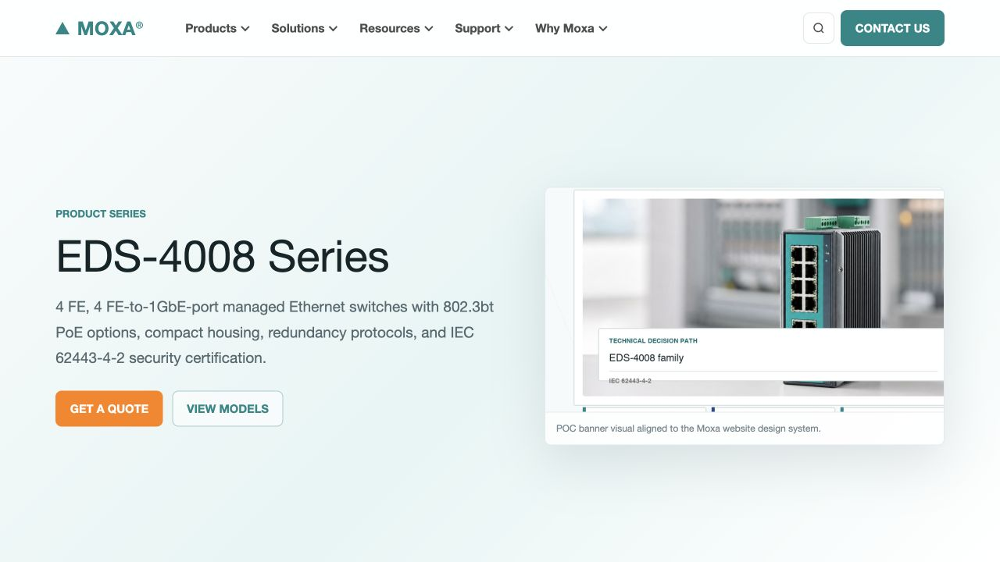
Crop around the device, preserve ports, and keep the product away from text.
ApplicationIndustrial context
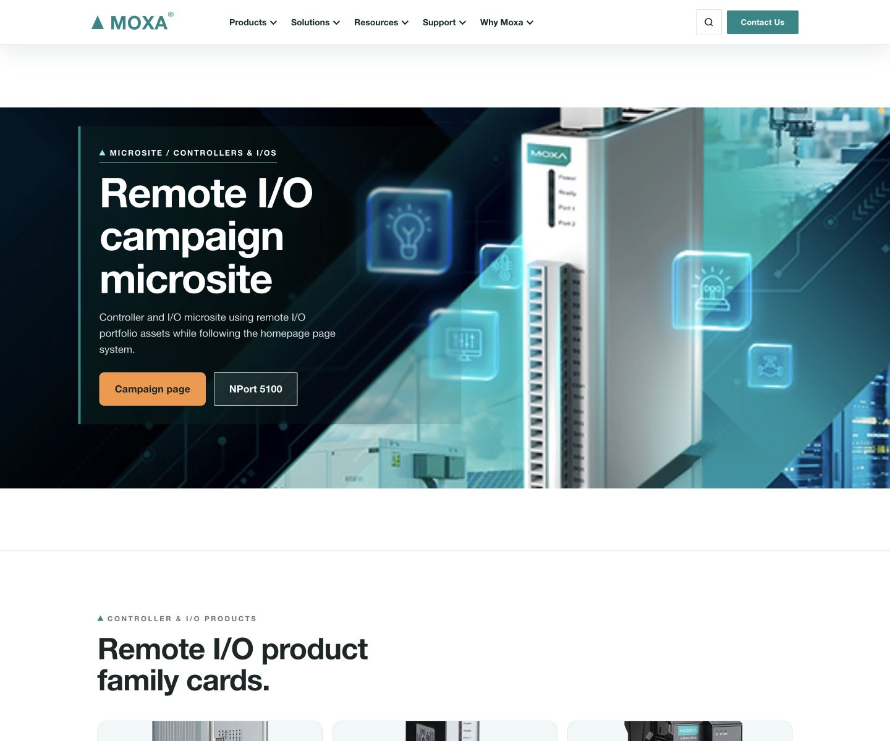
Use credible environments with an intentional focal point and readable overlay.
IconSimple and functional
Consistent 24 px stroke icons. No mixed illustration styles within a module.
Action hierarchy is visible at a glance.
Button variants
States
Usage rules
- 44 px minimum target height
- Primary CTA: white label on Moxa Green
- One primary action per decision region
- Button width follows label; never force arbitrary equal widths
- Use verbs that describe the destination
- Text links remain visually distinct and keyboard focusable
Every field supports completion and trust.
Input
Visible label, hint, error, and required state. Placeholder is never the only label.
Search + Ask AI
Global search and in-context search are visually related but have different scopes.
Consent
I agree to the privacy policy and consent to Moxa contacting me about this request.
Consent is explicit, unchecked by default, linked, and stored with form metadata.
Two clear levels: utility/search, then navigation.
Start with what you are building
Describe the application and let the finder route you.
Network infrastructure
- Ethernet Switches
- Secure Routers
- Wireless AP
Models & validation
- EDS-4008-LV
- EDS-4008-HV
- LV/HV AI Compare
Product media
- HXML Manual
- 360-degree Product Image
- All resources
Orientation remains visible through every journey.
Breadcrumb
All parent items are clickable. Current item uses text, not a dead link.
Anchor navigation
Sticky only when helpful; accounts for header offset and keyboard focus.
Floating journey navigator
Persistent, compact, labeled, and never obscures page controls.
Small signals, precise meaning.
Labels & badges
Short nouns only. Badges do not replace titles or status explanations.
Alerts
Meets IEC 62443 requirements.
Verify the operating temperature.
Engineering status
- Availability and lifecycle
- Compatibility statement
- Validation state
- Source/date metadata
- Plain-language consequence
Cards group evidence—not decoration.
EDS-4008 Series
4 FE, 4 FE-to-1GbE-port managed Ethernet switches.
Datasheet
Technical specifications, certifications, and ordering information.
Power & energy
IEC 61850-3 substation automation networks.
Why choose HV?
For high-voltage DC or AC input when the site does not provide low-voltage DC.
Minimum contract
Type label · descriptive title · evidence or summary · explicit action · optional metadata.
Layout behavior
Cards align by content priority, not fixed arbitrary height. Mobile stacks in reading order.
Progressive disclosure keeps complex content usable.
Accordion
The plus rotates to ×. Height animates smoothly; content remains available to assistive technology.
Tabs
Use for peer sections. Arrow keys move focus. Do not hide critical content only inside tabs.
Modal / advisor panel
Product selection and technical validation
Focus trap, Escape close, labelled title, restored focus, and mobile full-screen behavior.
Engineering differences become scannable decisions.
| Engineering specification | EDS-4008-LV | EDS-4008-HV | Decision cue |
|---|---|---|---|
| Operating voltage | 9.6 to 60 VDC | 88 to 300 VDC | Match site power |
| AC input | Not listed | 85 to 264 VAC | HV supports AC |
| Power module | PWR-100-LV | PWR-105-HV-I | Use correct module |
| Ethernet ports | Shared series configuration | Shared series configuration | No difference |
| Temperature | Standard / -T variants | Standard / -T variants | Check environment |
Table behavior
Sticky first column on narrow screens, accessible headers, horizontal scroll hint.
Source behavior
Explicit source hyperlinks sit immediately below the AI answer and table.
Decision summary
Choose LV for low-voltage DC. Choose HV for high-voltage DC or AC input.
Results summarize before they ask users to filter.
Refine results
- Products 4
- Documents 3
- Videos 1
- Campaigns 1
Products
4 resultsEDS-4008 Series
Managed Ethernet switches with 802.3bt PoE options.
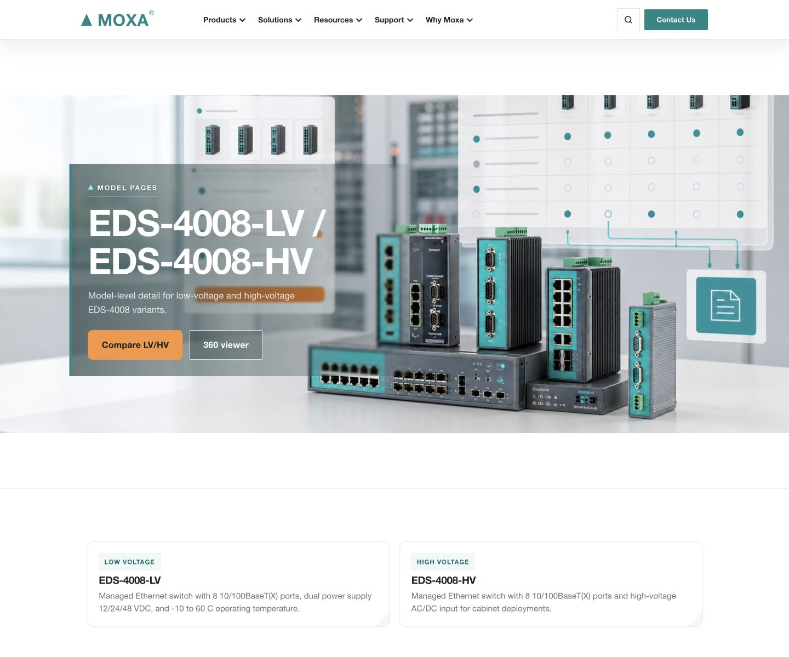
EDS-4008-LV
Low-voltage model with 8 10/100BaseT(X) ports.
Hero modules frame a decision, not just an image.
Split hero
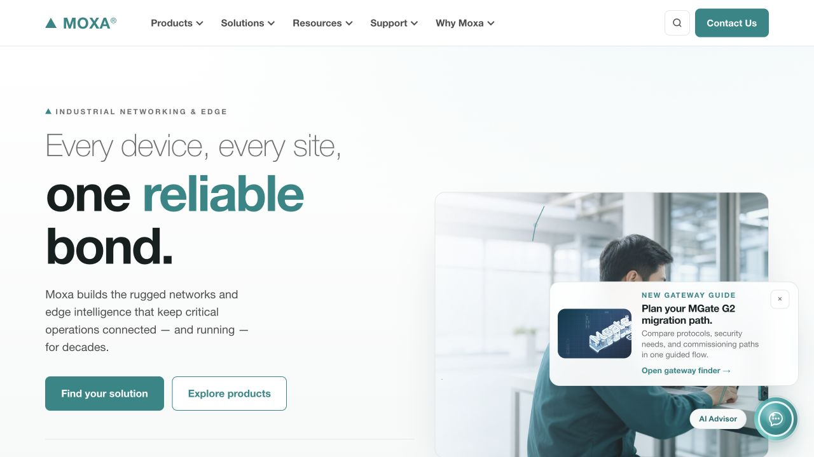
Content left, evidence image right, maximum two actions.
Video collection
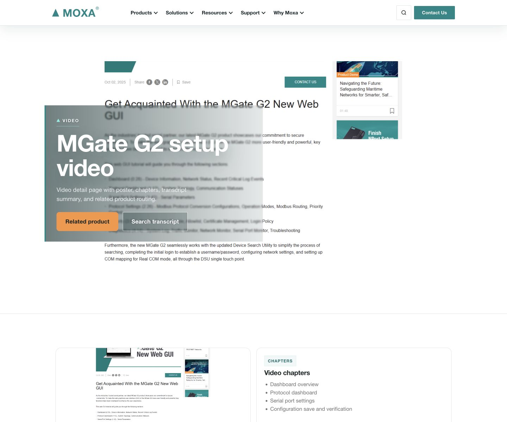
Featured episode + visible playlist + metadata and transcript.
360 product viewer
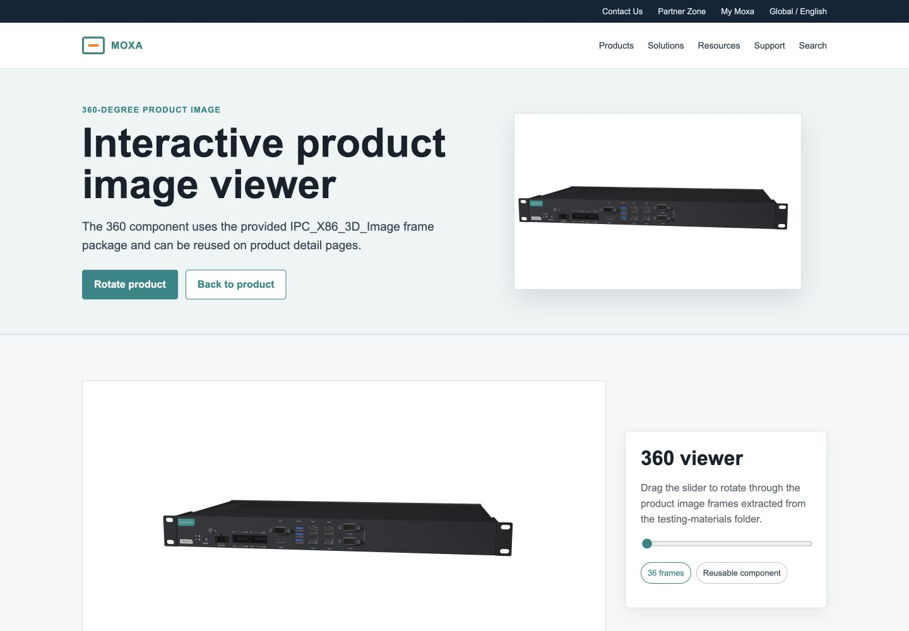
Product centered on a clean surface; controls are labelled and keyboard usable.
One conversion form. One compact footer.
Plan your remote I/O project.
Share the application, environment, and timeline. A local Moxa expert will follow up.
- Application guidance
- Product selection
- Local distributor support
AI is a source-linked engineering workbench.
Header, breadcrumb, anchors, contact, and footer are global.
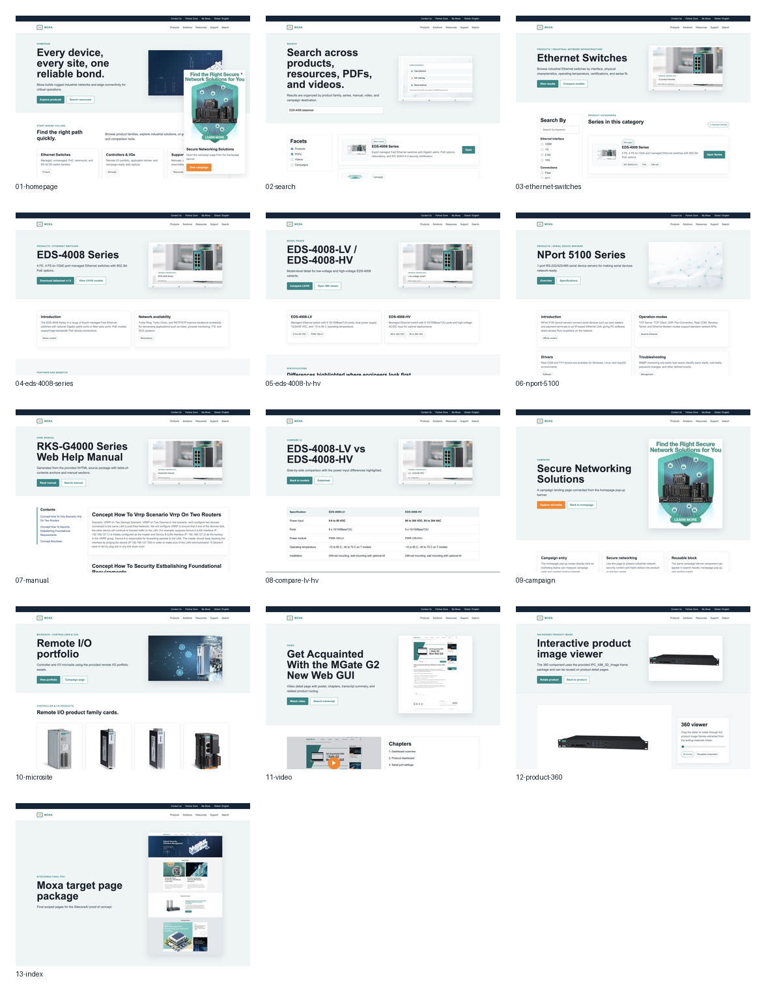
Header
Search + Ask AI + utility + nav.
Breadcrumb
Clickable, consistent hierarchy.
Page body
1240 px content alignment.
Contact
Unified lead-capture module.
Footer
Social, subscribe, legal, locale.
Homepage, search, and category move users toward a fit.
HomepageOrient
Hero → guided search → explore → featured products → trending → connectivity.
Search resultsNarrow
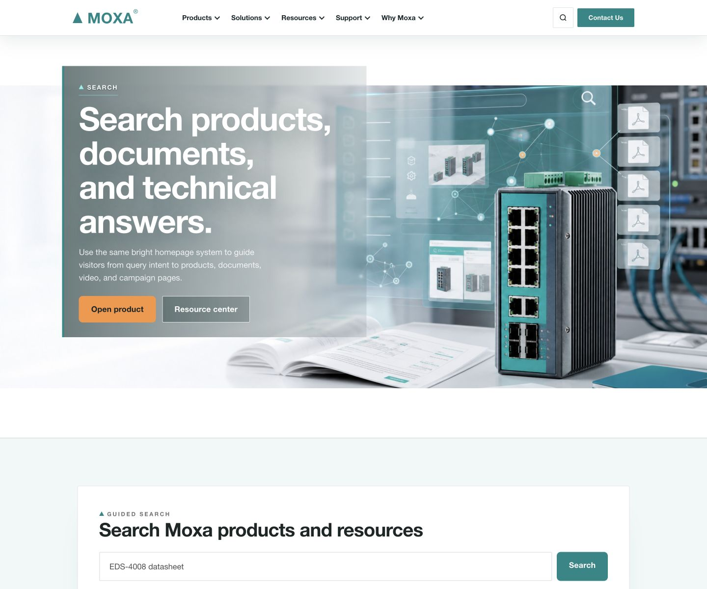
Query summary → facets → grouped results → clear next action.
Ethernet switchesChoose family
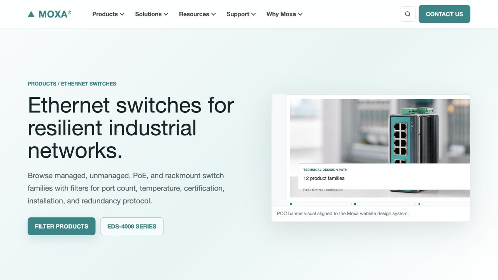
Category framing → filters → product families → technical guidance.
Series, model, and NPort reuse one evidence architecture.
SeriesEDS-4008
Overview → configurations → models → resources → applications.
ModelLV / HV
Model proof → specifications → downloads → compare → contact.
Series reuseNPort 5100
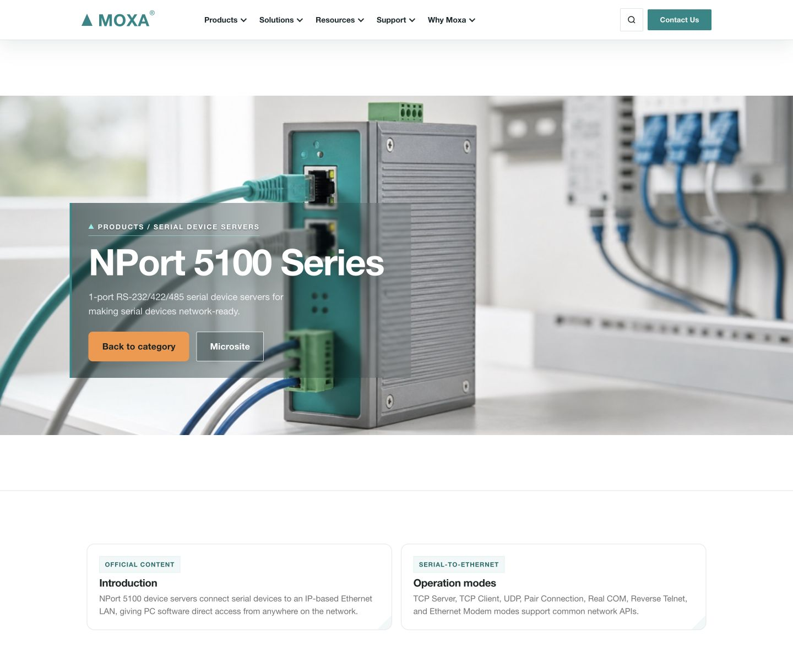
Same structure, new content model and serial-device evidence.
Campaign and microsite share conversion patterns, not identical layouts.
CampaignIndustrial network security
Narrative sections, layered-protection visuals, smooth accordions, product portfolio, unified lead form.
MicrositeRemote I/O portfolio
Compact hero, portfolio proof, applications, selection guide, shared contact form and global footer.
Manual, video, comparison, and 360 support validation.
HXML manual
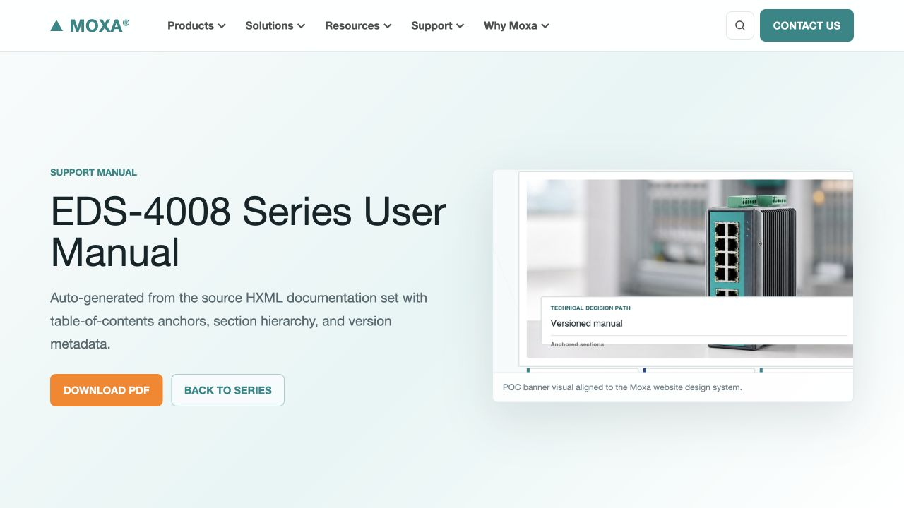
Compact solid banner, manual search, anchor TOC, body content.
Video library
Featured episode and five-part collection.
AI compare
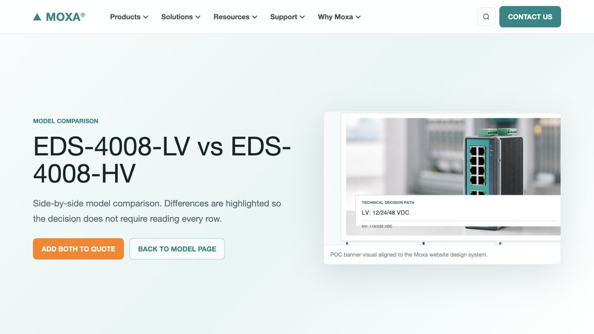
Conversation, table, and explicit sources.
360 viewer
Clean product stage and accessible controls.
Every PoC page type has a system template.
Homepage
Homepage / discovery
Search results
Global discovery
EDS-4008 series
Product series
Campaign
Security story
Remote I/O microsite
Portfolio story
Campaign pop-up
Promotion overlay
Video page
Media collection
Ethernet switches
Product category
LV/HV model
Product model
NPort 5100
Product series reuse
HXML manual
Support document
Compare + 360
AI and immersive UI
13 routes mapped to template, shell, and conversion.
Accessible by contract, not retrofit.
Keyboard & focus
- Logical DOM order
- Visible focus ring
- Escape closes overlays
- Skip to content
- No keyboard traps
Vision & motion
- WCAG AA contrast
- Text survives 200% zoom
- Color has redundant meaning
- Reduced-motion support
- Alt text reflects purpose
Content design
- User-facing language
- Specific action verbs
- Engineering units preserved
- Sources and dates visible
- Errors explain recovery
Design decisions become buildable contracts.
30 Sitecore mappings
Each component maps to a rendering, content fields, datasource, parameters, and acceptance criteria.
Change workflow
- Propose with use case
- Audit token/component impact
- Review accessibility
- Version and publish
- Update route matrix
Version policy
| Patch | Fix, no contract change |
| Minor | Backward-compatible addition |
| Major | Breaking behavior or schema |